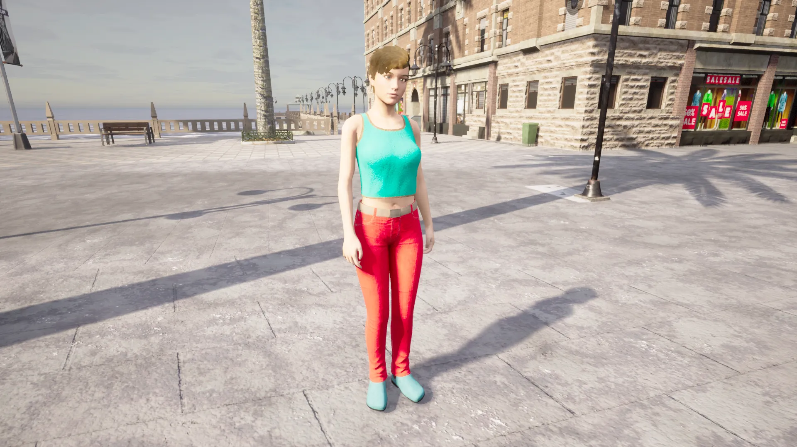
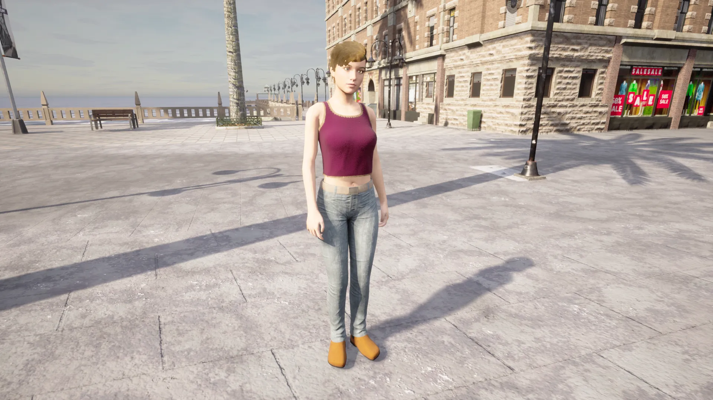
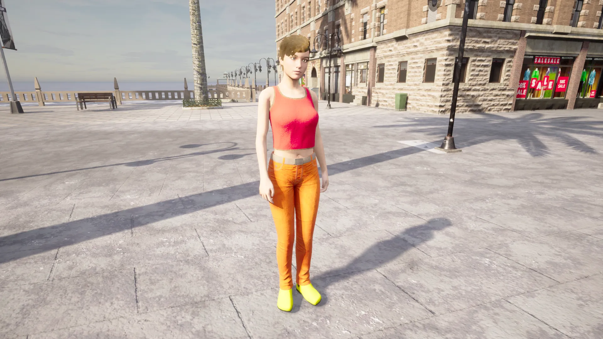
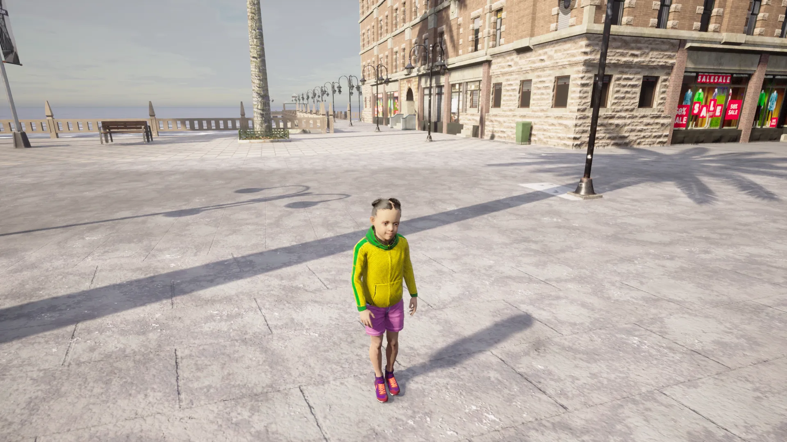
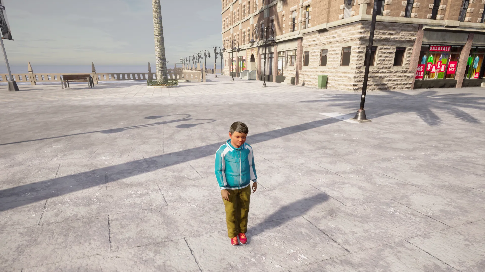

行人目录¶
成年人¶
- 成年行人 - 1
- 成年行人 - 2
- 成年行人 - 3
- 成年行人 - 4
- 成年行人 - 5
- 成年行人 - 6
- 成年行人 - 7
- 成年行人 - 8
- 成年行人 - 9
- 成年行人 - 10
- 成年行人 - 11
- 成年行人 - 12
- 成年行人 - 13
- 成年行人 - 14
- 成年行人 - 15
小孩¶
警察¶
成年人¶
成年行人 1 - 变体 1 ¶

- 蓝图 ID: walker.pedestrian.0001
成年行人 1 - 变体 2 ¶

- 蓝图 ID: walker.pedestrian.0005
成年行人 1 - 变体 3 ¶
- 蓝图 ID: walker.pedestrian.0006
成年行人 1 - 变体 4 ¶

- 蓝图 ID: walker.pedestrian.0007
成年行人 1 - 变体 5 ¶

- 蓝图 ID: walker.pedestrian.0008
成年行人 2 - 变体 1 ¶
- 蓝图 ID: walker.pedestrian.0004
成年行人 2 - 变体 2 ¶

- 蓝图 ID: walker.pedestrian.0003
成年行人 2 - 变体 3 ¶
- 蓝图 ID: walker.pedestrian.0002
成年行人 3 - 变体 1 ¶

- 蓝图 ID: walker.pedestrian.0015
成年行人 3 - 变体 2 ¶
- 蓝图 ID: walker.pedestrian.0019
成年行人 4 - 变体 1 ¶

- 蓝图 ID: walker.pedestrian.0016
成年行人 4 - 变体 2 ¶

- 蓝图 ID: walker.pedestrian.0017
成年行人 5 - 变体 1 ¶
- 蓝图 ID: walker.pedestrian.0026
成年行人 5 - 变体 2 ¶

- 蓝图 ID: walker.pedestrian.0018
成年行人 6 - 变体 1 ¶

- 蓝图 ID: walker.pedestrian.0021
成年行人 6 - 变体 2 ¶

- 蓝图 ID: walker.pedestrian.0020
成年行人 7 - 变体 1 ¶

- 蓝图 ID: walker.pedestrian.0023
成年行人 7 - 变体 2 ¶

- 蓝图 ID: walker.pedestrian.0022
成年行人 8 - 变体 1 ¶

- 蓝图 ID: walker.pedestrian.0024
成年行人 8 - 变体 2 ¶

- 蓝图 ID: walker.pedestrian.0025
成年行人 9 - 变体 1 ¶

- 蓝图 ID: walker.pedestrian.0027
成年行人 9 - 变体 2 ¶
- 蓝图 ID: walker.pedestrian.0029
成年行人 9 - 变体 3 ¶
- 蓝图 ID: walker.pedestrian.0028
成年行人 10 - 变体 1 ¶
- 蓝图 ID: walker.pedestrian.0041
成年行人 10 - 变体 2 ¶

- 蓝图 ID: walker.pedestrian.0040
成年行人 10 - 变体 3 ¶
- 蓝图 ID: walker.pedestrian.0033
成年行人 10 - 变体 4 ¶

- 蓝图 ID: walker.pedestrian.0031
成年行人 11 - 变体 1 ¶

- 蓝图 ID: walker.pedestrian.0034
成年行人 11 - 变体 2 ¶

- 蓝图 ID: walker.pedestrian.0038
成年行人 12 - 变体 1 ¶
- 蓝图 ID: walker.pedestrian.0035
成年行人 12 - 变体 2 ¶
- 蓝图 ID: walker.pedestrian.0036
成年行人 12 - 变体 3 ¶
- 蓝图 ID: walker.pedestrian.0037
成年行人 13 - 变体 1 ¶
- 蓝图 ID: walker.pedestrian.0039
成年行人 14 - 变体 1 ¶
- 蓝图 ID: walker.pedestrian.0042
成年行人 14 - 变体 2 ¶

- 蓝图 ID: walker.pedestrian.0043
成年行人 14 - 变体 3 ¶
- 蓝图 ID: walker.pedestrian.0044
成年行人 15 - 变体 1 ¶
- 蓝图 ID: walker.pedestrian.0047
成年行人 15 - 变体 2 ¶
- 蓝图 ID: walker.pedestrian.0046
小孩¶
Child pedestrian 1 - 变体 1 ¶

- 蓝图 ID: walker.pedestrian.0011
Child pedestrian 1 - 变体 2 ¶
- 蓝图 ID: walker.pedestrian.0010
Child pedestrian 1 - 变体 3 ¶
- 蓝图 ID: walker.pedestrian.0009
Child pedestrian 2 - 变体 1 ¶

- 蓝图 ID: walker.pedestrian.0014
Child pedestrian 2 - 变体 2 ¶

- 蓝图 ID: walker.pedestrian.0013
Child pedestrian 2 - 变体 3 ¶

- 蓝图 ID: walker.pedestrian.0012
Child pedestrian 3 - 变体 1 ¶

- 蓝图 ID: walker.pedestrian.0048
Child pedestrian 4 - 变体 1 ¶

- 蓝图 ID: walker.pedestrian.0049
警察¶
警察 1 ¶
- 蓝图 ID: walker.pedestrian.0030
警察 2 ¶

- 蓝图 ID: walker.pedestrian.0032